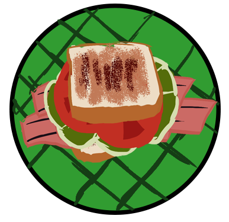

An open place for the club to discuss things.
clasS, have you found any new information about the Paranormal activity?
I think the omlet turned out pretty good, but I could've added more spinach, I think We also experimented together with a more interesting kind of recipe, one that even involved litening through a type of cord, but it didn't really work as intended.

daerb
i don't mEan the Culinary assignment, i mean the sub assignment. the one about wade what did the ritual turn up?
About that...
eseehc
It didn't really work as well as I thought it would :/
That's unfortunate... so nothing? no nEw information at all?
Nope... Unless you count the information that the ritual doesn't work
I'm sorry that we werent more helpful
it's alRight, i was able to pinpoint the location in my own time, so i know where to find it. ill give more information tomorrow.